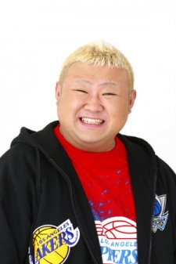
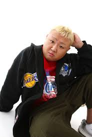
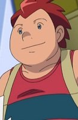

Tomohiro Waki is a Japanese actor and actress.
- Gender: Male
- Birthday: October 11, 1980
- Hometown: Hiratsuka, Kanagawa, Japan
- Skills: Kendo, Pro-Wrestling and Sleight of hand

|  |
Tomohiro Waki is a Japanese actor and actress.
|
 |
|---|
|  | Stephan |
|
Stephan is rival of Ash Ketchman. He has a passion of battling with other trainer and is always willing to take on any opponent. He always wants to strong than his opponents. |